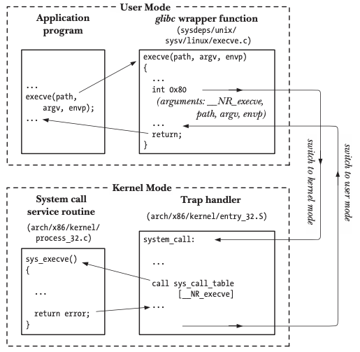
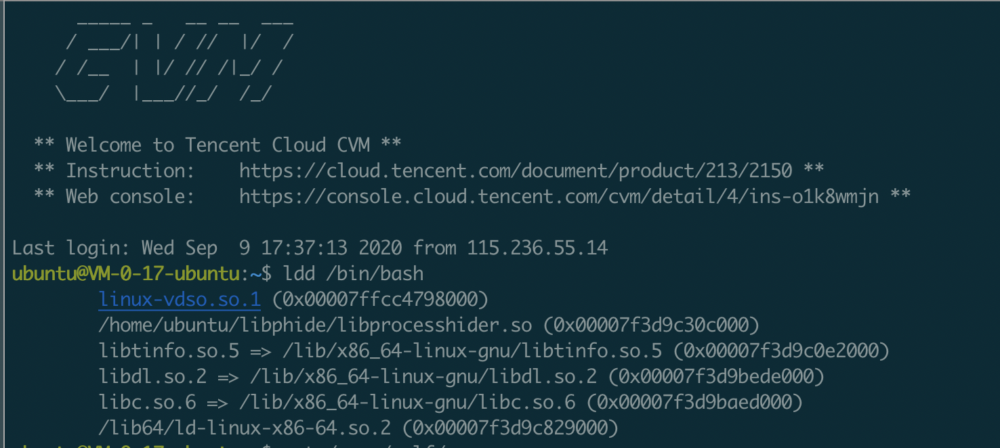
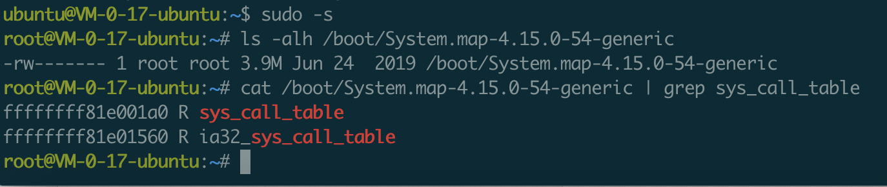
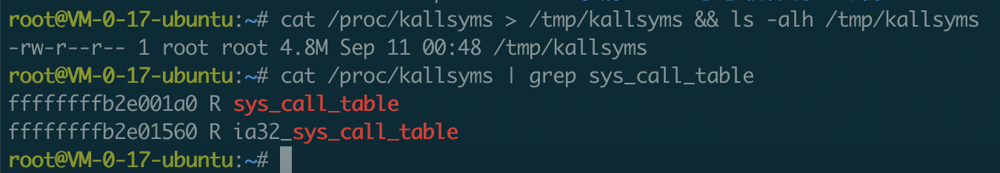
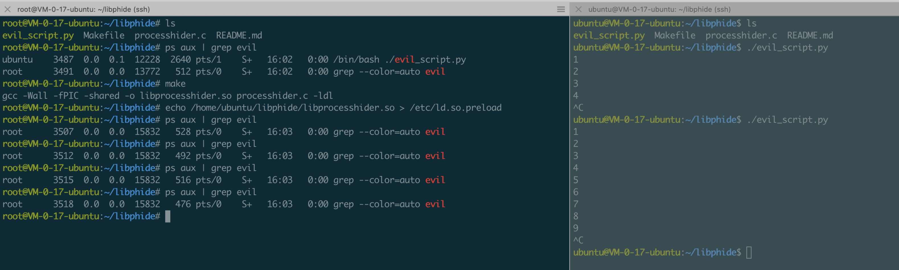
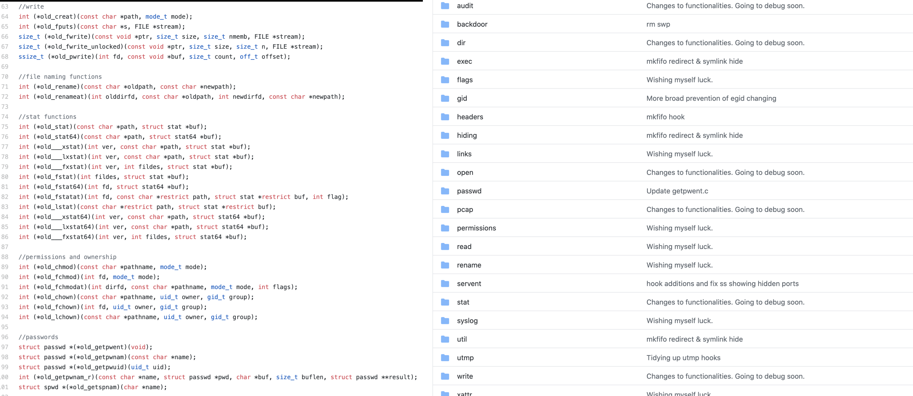

原理
rootkit介绍
0x01 功能
rootkit可以简单理解root.kit，即攻击者取得root权限后所用的工具包，一般来说，90%的rootkit主要目标都是来做对攻击者后门行为的隐藏，但仍有部分rootkit是存在系统操纵和数据收集行为的，包括键盘记录、流量嗅探及程序运行重定向等等；通常来说，rootkit的功能越单一，就越难检测到，一旦rootkit行为太多，很可能触及一些checklist导致暴露，所以保持rootkit功能的单一性是一个优秀的渗透人员需要有的理解。
0x02 分类
通常来说目前常见的rootkit基本可以根据应用的层级分为两类，一种是工作在ring0层的rootkit，另一种是工作在ring3层的rootkit，还有一种比较高级，应用在主机bios层，由于当前场景较少，暂不深入。
0x03 lkm
LKM是loadable kernel module的缩写，意为可加载内核模块，内核本身是一个单模块，单内核模块运行效率高，但是由于所有内容都集成在一个模块里，所以可扩展性/可维护性是比较弱的，为了弥补这个问题，内核模块机制就出现了，原生linux的功能也因lkm的出现可以得到扩展。lkm的优点主要集中在两个方面：
1、动态加/卸载
2、轻量
前者在给内核添加新功能时不用频繁的重编译源码，后者则让lkm本身的体积无论编写还是编译都不会太过重量。
一个最基础的lkm如下：
1 |
|
Makefile文件如下：
1 | obj-m := hello_module.o |
0x04 hook
rootkit无论如何也绕不去的一个坎。rootkit本质上其实就是通过hook进行工作的，根据rootkit工作的层级，其hook的对象也有差异，一般来说，内核态rootkit hook系统调用，用户态rootkit hook libc；从用户态出发，程序不可避免会去执行libc库中的函数，libc去调系统调用切进内核调内核函数，一旦hook了syscall/libc，就相当于劫持了程序在用户态/内核态的控制流，rootkit最核心的一点就在于这里。
syscall && libc hook
0x01 系统调用方式和演变过程
由于内核rootkit需要对系统调用进行hook，linux系统调用流程有必要去了解，后续可以了解到不同版本系统、cpu架构下的hook方式其实是有较大差别的。linux系统调用方式的演进如下所示：
1 | int 0x80 -> sysenter/syscall -> vsdo |
int 0x80
早期的x86处理器使用int 0x80进行软中断触发系统调用从用户态切换到内核态执行内核函数，一般来说经典软中断要经历如下几个流程：
1、应用程序调c库
2、c库函数内部调系统调用，将参数放到栈上，将系统调用号放到寄存器（eax），布置完后调int 0x80
3、cpu接收到中断，去IDT中寻找0x80对应中断描述符
4、找到中断描述符后切换到内核栈（tss.ss0:tss.esp0），再根据中断描述符信息找到中断服务例程的基址和偏移分别加载到cs和eip，
5、用户态上下文信息压入内核栈
6、执行0x80对应的中断服务例程（system_call），根据eax中的系统调用号去system_call_table系统调用表中寻找具体的系统调用例程并执行
7、执行完后syscall_exit，从内核栈恢复用户态上下文，切回用户空间

sysenter/syscall
从以上流程可以看出，软中断整个过程其实是非常繁琐的，特别是栈切换和系统调用内部对参数的安全/合法性检查，这在频繁调用系统调用在内核和用户态间来回切换的应用程序执行环境中会造成大量的性能损失。针对早期软中断的性能问题，linux团队在新版本中操作系统中引入了快速系统调用指令sysenter/syscall，分别用于32/64位，至于为什么未使用同一系统调用指令，是因为sysenter和syscall分别由intel和amd设计出，二者早期因商业竞争关系兼容这块做的并不好，只能由linux这块去做调用方的兼容，为了保证最大兼容，就针对intel/amd的架构设计了两条不同的快速调用汇编指令。
sysenter
32位下的syenter系统调用流程如下：
1、引入三个MSR寄存器，内核初始化时会将系统调用的回调函数放在IA32_SYSENTER_EIP MSR寄存器中
2、根据调用惯例从eax及其它寄存器中取系统调用号和传参
3、之后的流程大致同软中断
syscall
64位下的syscall系统调用流程与sysenter类似，其系统调用流程如下：
1、引入四个MSR寄存器，内核初始化时会将系统调用的回调函数放在IA32_LSTAR MSR寄存器中
2、根据调用惯例从eax及其它寄存器中取系统调用号和传参
3、之后的流程大致同软中断
快速汇编指令相比软中断少了IDT中断服务例程的寻址及内核栈切换的过程，相比软中断减少了部分系统调用耗费的时间。
vdso
vdso全称为虚拟动态共享对象，其原理是把原属于linux内核空间的函数映射到用户态，让用户态的应用程序不再需要进行系统调用切换进内核，从而减少应用程序执行过程中在系统调用上的性能损耗。vsdo使用标准的链接与加载技术，由内核提供并动态映射到用户态每一个正在执行的进程空间中。因为是由内核提供，所以在用户态无法直接找到vdso对应的so库文件。

vsdo的内核函数映射模式相对前两者性能损耗大幅降低，甚至可以与用户态函数调用持平，但因为将内核函数映射到用户态整个过程可能存在稳定性及安全等风险，所以vsdo这块目前只支持少量函数映射。
0x02 系统调用hook
系统调用hook的钩法很多，这边介绍最常用，也是最简单有效的一种，即系统调用表hook，而其它一些钩法如kernel inline hook、kprobe hook等暂时还未深入，等待之后填坑。
系统调用表hook的整体流程如下：
1、system_call_table地址获取
2、内存保护关闭
3、系统调用表函数指针替换
system_call_table
首先是系统调用表地址的获取，常用方式如下：
1、暴力搜索
2、/proc/kallsyms | /boot/System.map
3、IDT
暴力搜索
1 | unsigned long ** |
PAGE_OFFSET是宏定义，代表内核页起始地址，sys_close表示具体的系统调用函数指针，__NR_close可理解为系统调用号，此函数表示从内核页起始地址开始遍历，一旦检测到存在内核地址+系统调用号偏移对应的指针指向的地址空间为sys_close系统调用函数指针，则认为该地址为系统调用表地址。
/proc/kallsyms｜/boot/System.map


/boot/System.map在系统初始化时存储了内核的全量符号表，包括内核函数和变量符号地址对应关系；/proc/kallsyms除了内核符号外还额外存储了其它需动态加载模块的符号信息，导致其要比前者大一点。两张表中都存有系统调用表的硬编码地址。
IDT
1 | unsigned long *find_sys_call_table(void) |
在软中断的系统调用场景中，可以通过先拿到idt中断描述符表地址，然后在0x80对应的中断例程system_call函数空间内搜索call sys_call_table汇编中call对应的call(\xff\x14\x85)硬编码特征的方式拿到sys_call_table具体地址。
1 | void *get_sys_call_table(void) { |
Sysenter/syscall的场景与软中断类似，省略了根据idt找system_call的步骤，以及64位下的call机器码为\xff\x14\xc5，其余与软中断基本一致。
内存写保护关闭
1 | void |
系统调用表在内核中是只读的，直接修改内存会导致内核oops；修改系统调用表需要暂时关闭系统的内存写保护，这块内核有api可以直接调用，不需要写内联汇编；内存读写保护状态保存在cr0寄存器中，在调用相关函数设置cr0寄存器bit置位时需提前加自旋锁，防止被内核抢占，避免执行内存写保护关闭过程中出现内核安全/稳定性风险。
系统调用覆写
1 | asmlinkage long |
1 | asmlinkage long |
定义两个函数指针，分别用来指向原生/伪造的系统调用函数，伪造函数自实现逻辑。
1 | # define HOOK_SCT(sct, name) \ |
替换系统调用表中的函数指针，同时将原生函数指针保存在变量中，方便后续函数尾部执行返回正常功能。
0x03 libc hook
libc hook本质与系统调用hook一致，不再赘述，linux上最有效的hook方式为ld_preload，为广大malware制作者所喜爱，ld_preload是linux系统的一个环境变量，可以影响程序运行时的动态链接，允许程序运行时优先加载ld_preload文件中自定义的函数。
相比lkm，其有两个优点：
1、简单
2、稳定
简单是因为相对相对lkm，ld_preload的应用场景是在用户态，更偏向用户态常用的linux c编程；稳定是因为系统提供的机制，不用像lkm一样需要关注不同内核版本间的兼容性问题，侵入性相对hook系统调用改系统调用表要小很多，稳定性好。demo如下：

1 | #define DECLARE_READDIR(dirent, readdir) \ |
这边hook了libc中的readdir，用来对应用程序调readdir解析vfs数据显示的进程进行过滤，尾部同lkm，返回时执行原生函数逻辑。
通用的rootkit攻击手法
常见rootkit涉及的攻击面：
1、进程
2、文件
3、网络
4、自身隐藏
5、else & more
进程
用户态可以通过hook execv、execl、execle、execlp、execvp、fexecve等api劫持进程执行流程，达到程序执行的恶意重定向效果；针对一些hids通过hook execve等函数收集进程创建信息的行为，可以通过覆写execve进行bypass；lkm可以通过unlink task_struct节点达到进程隐藏的效果等等。
文件
用户态可以通过覆写readdir、unlink、access等函数对文件的读、写、执行进行控制，从而达到文件隐藏、进程（文件）执行控制、文件禁删除等效果，方便攻击者的后门程序可以非常顺利的在受害者主机驻留并难以被发现、清除；内核态一般hook getdents/getdents64两个系统调用。
1 | usermode: |
网络
一般做主机/端口隐藏或者流量嗅探，常用hook函数：
1 | socket、connect、accept ... |
自身隐藏
1 | kernel mode: |
lsmod本身是和ps、top这些程序一样解析/proc的，lsmod的数据来自于解析/proc/modules文件，而vfs中的数据是内核映射并格式化出来的，本质上来源于内核的modules struct内核模块链表，一般来说，常用的方式是在恶意lkm中使用list_del在载入内核后unlink掉内核链表中的此项，这样lsmod就无法查看到存在对应模块信息了；但是/sys/modules中还是能看到对应内核模块信息，个人理解是/proc/kallsyms和/sys/module是来自内核中两条相似的链表，其中一条派生自另一条（后面打算调一下），二者分用与不同功能；一般使用kobject_del删除模块对象之后，/sys/module中就没有对应内核模块信息了；同时，rmmod也无法检测到对应模块的存在，也就无法直接进行卸载；但可通过信号控制在脚本中动态地将内核模块信息加入对应内核模块链表，达到一个完整的控制效果。
1 | module_show(void) |
用户态ld_preload本身比较简单，不再赘述。
else & more

rootkit的利用手法并不只限于隐藏，linux原生功能可以做的，它同样能做；一些较好的开源项目对大量linux常用的api进行了分类并预留接口，由使用者进行逻辑的自定义和利用。
检测
通用检测方式
LKM
当前比较通用的几种检测：
1、进程事件检测
2、源码特征检测
3、符号特征检测
4、sys_call_table/idt完整性检测
LD_PRELOAD
1、文件事件检测
2、预加载白名单审计
3、静态编译对比检测
4、系统调用对比检测
5、task_struct链表信息对比
以上的检测方式都非常简单且限制很多，如lkm中第四点在2B的产品中难以被落地，ld_preload中不同进程列表对比去发现隐藏进程的方式会存在时延导致误报等等；但不可否认在可工程化的前提下以上检测手段结合使用是能产生效果的。
开源项目
针对rootkit这块的经典项目github上只看到两个：
1、chkrootkit
2、rkhunter
两者都是针对文件完整性做检查，效果非常有限，相对来说rkhunter要比chkrootkit高级一些，无论是检测方式还是更新时间，后续将针对这两个项目输出源码分析。
总结&思考
1、针对rootkit的检测想有一个较高准确率，则攻防双方至少要在同一层面
2、目前市场上99%的hids都是静态检测，对于rootkit检测的能力非常有限
3、未来攻防双方博弈的战场将会持续由用户态转向内核态
参考
https://draveness.me/whys-the-design-syscall-overhead/
https://wohin.me/linux-rootkit-shi-yan-0004-ling-wai-ji-chong-xi-tong-diao-yong-gua-gou-ji-zhu/
https://0xax.gitbooks.io/linux-insides/content/SysCall/
http://arthurchiao.art/blog/system-call-definitive-guide-zh/
https://cloud.tencent.com/developer/article/1073909
https://vvl.me/2019/06/linux-syscall-and-vsyscall-vdso-in-x86/